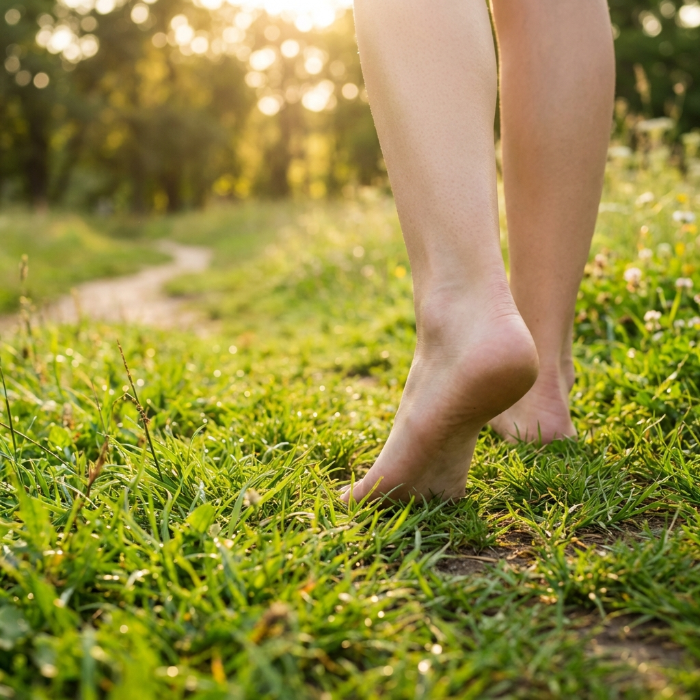
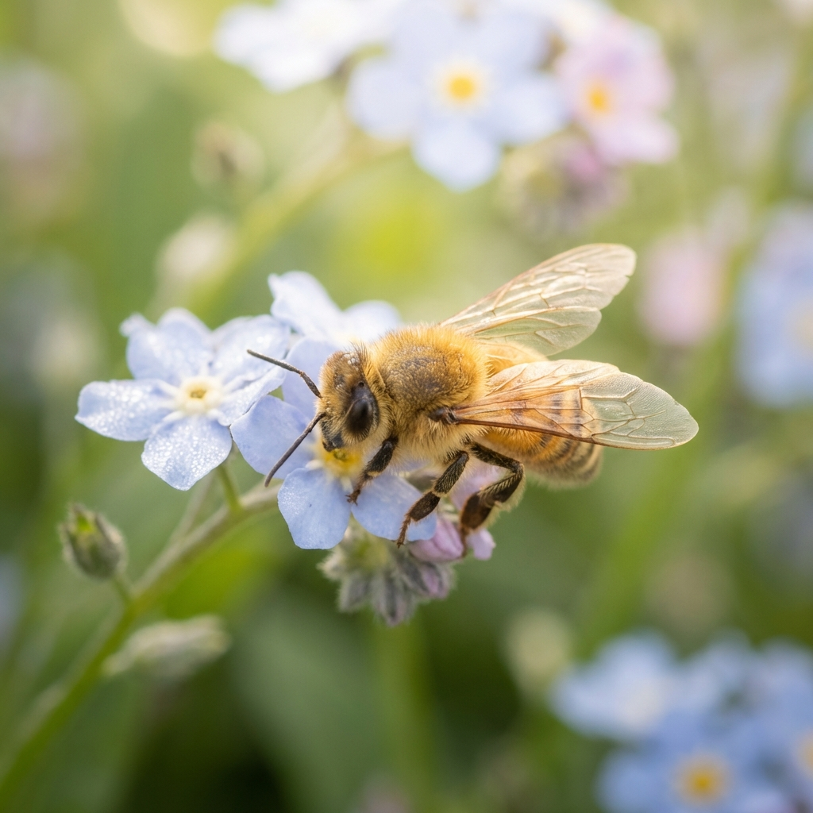
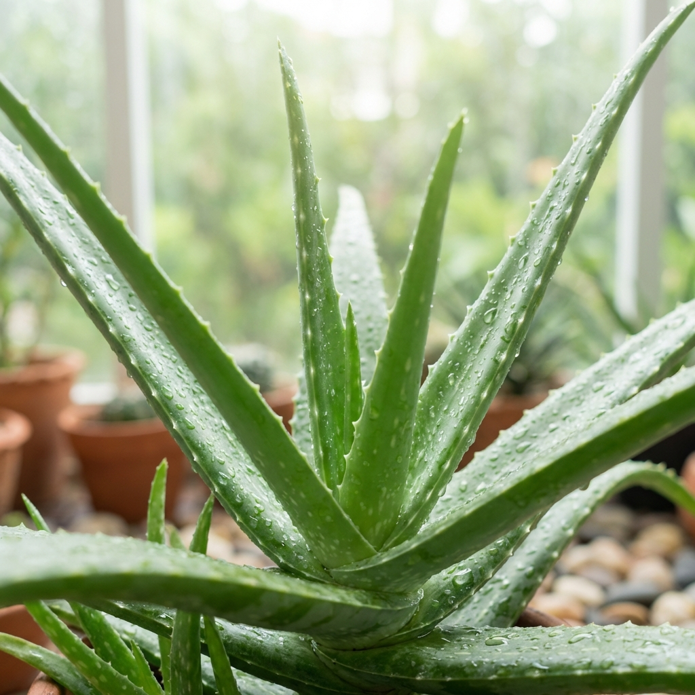
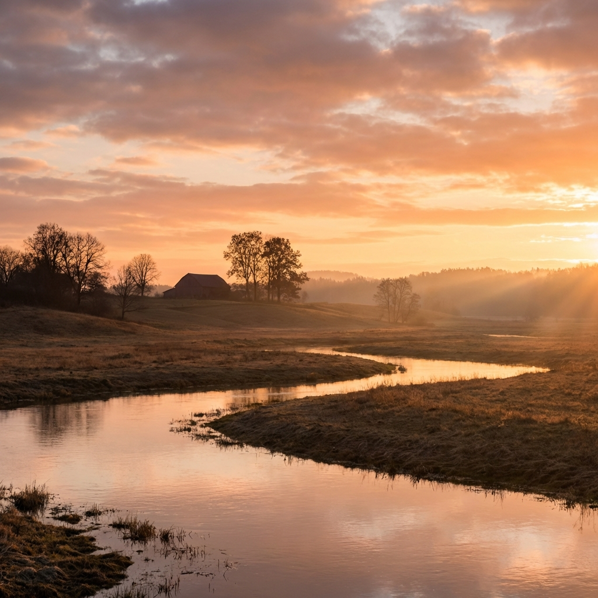
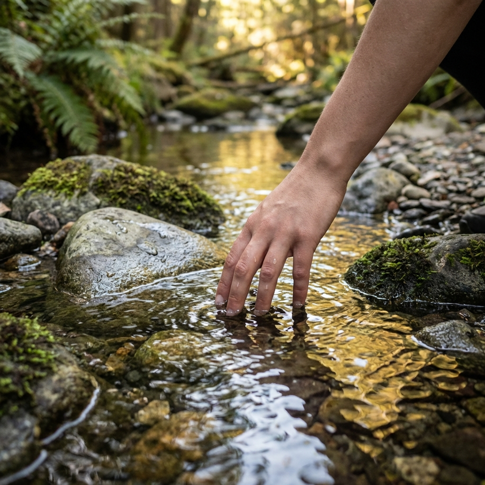

Origen
Qué
Somos un equipo de estudiantes ofreciendo esta posible solución al problema social de la ansiedad causada por el ritmo de vida, las pantallas y las redes sociales.
Porqué
Creemos que en nuestra sociedad actual hace falta un espacio para relajarse y descansar de la incansable sobreestimulación a la que estamos expuestos.
Cómo
En neuma puedes encontrar una navegación tranquila, consejos y respaldo de una comunidad amigable que va aumentando día a día.
neuma
Nuestra identidad
Alma
Aire
Pneuma: m. Fil. Aliento racional que, en la filosofía estoica, informa y ordena el universo.
-

-

-

-

-
